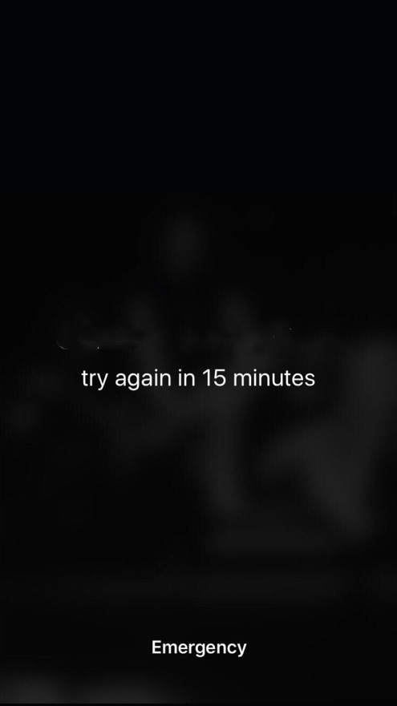

2018
May 18th May 17th May 16th May 17th May 15th May 14th May 13th May 12th May 11th May 10th May 9th May 8th May 7th May 6th May 5th May 4th ...


2018
May 18th May 17th May 16th May 17th May 15th May 14th May 13th May 12th May 11th May 10th May 9th May 8th May 7th May 6th May 5th May 4th ...
Language is malleable. It can be stretched and pulled in different directions and mean different things. The same word changes with a new sentence and different words mimic each other in old ones. The malleability of language challenges the notion of meaning. Composition of words frames connotation while typographic nuances point to it.
This brings in the idea of contextualizing and consequently, re-contextualizing. The process of found poetry is deconstructing the space in which language exists and re-contextualizing it in a new environment to mean something different. An open time capsule for poetry borrows, or rather extracts, language from unexpected corners of the digital realm (the web) and refashions it into concrete poetry. It pulls language from the text in search bars, web browsers, software menus, text editors and general digital user interfaces. This extracted language is then typographically and compositionally pulled, prodded and pinched into short poetic experiences.
These poetic experiences are described as concrete poetry because they refashion informative or ‘dry’ language into a visually communicative and engaging poetic narrative. We were inspired by the works of concrete poets like John Bennett and Emmett Williams. Poets that not only animated meaning with words but animated the words with typography, structure and subject matter.
With technology, new software and multiple digital distractions, many believe that poetry is increasingly obsolete. The idea of a love letter is condensed to the right emoticon; very personal hand written letters have become quick emails set in 12 pt. Arial Regular, diary entries are Facebook statuses and poetry for many is shackled to old book stores and dusty shelves. This project challenges that notion and boldly states that poetry is ubiquitous. It is in the blinking pop-up ads on every social media platform, “A taste of bright red”, it is in the text in search bars “Search people and more” commands in a design software, “shapes scale to any size”, blurb under the battery icon “using significant energy”, lost in the MAC back up system, “Enter time machine.” Poetry is now more pervasive and accessible than ever, if only we saw it as such. If only it was found and concreted into what is considered poetry.
We believe poetry shouldn’t be precious but available and ever-present. By including a timeline and almost the need to have a sketch for each day, we’re forced to create poetry without the pressure or any inhibitions. This idea was inspired by Joseph Brodksy’s speech, an Immodest Proposal which proposes that poetry should be everywhere, bus stops, restrooms, street corners and train stations. It shouldn’t be restricted to a certain demographic or even location. Everyone should write, read and have access to poetry in the way they do any other commodity.
Therefore, the aim of this capsule is to be a constant reminder of the poetry that surrounds us every day. Language is constant, but it is not immune to evolution. As the world of communication revolutionizes, language and poetic narrative have no choice but to follow, a trajectory we’d like to collect, archive and share.
By Stephanie Winarto & Anya Parakh
Digital Poetics, RISD Spring 2018